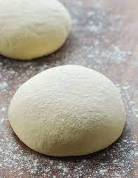

Pizza
Home

Description
Making pizza seems complicated but it is actually not that hard and can be a meditative experience if done right. It can also be complete chaos ...
The ingredients to success
The important thing when making Pizza is time.
The ingredients to cook
- 500 Gramm Mehl
- 2 TL Olivenöl
- 1 Pk Trockenhefe
- 250 ml lauwarmes Wasser
- Salz
- Zucker
The proceedings
- Trockenhefe in lauwarmes Wasser geben und kurz ziehen lassen.
- Mehl, Olivenöl, Zucker und Salz in eine Rührschüssel.
- Trockehefe und Wasser in die Schüssel dazugeben.
- Den Teig kneten bis er seidig ist.
- 30 min an einem warmen ort ziehen lassen.
- Bei 230 Grad 25 min Backen